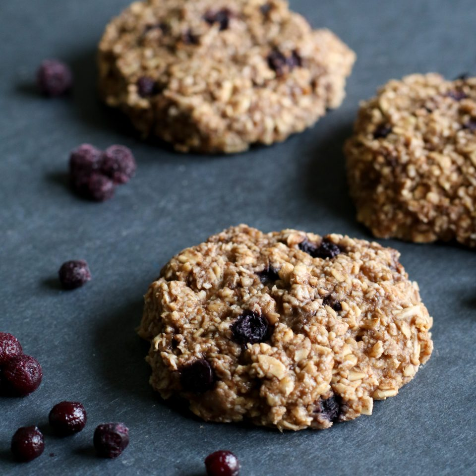

Banana Oat Cookies

Description
This breakfast or snack can be made with minimal ingredients and customized with any add-ins you desire.
These can go great with a side of fresh fruit.
Ingredients
- 1 cup of rolled oats
- 2 medium-large ripe bananas
Instructions
- Preheat oven to 350 F.
- Mash bananas in medium sized bowl until you achieve puree like consistency.
- In a food processor or blender, pulse the oats for 10 seconds to break into smaller fragments or blend into oat flour.
This helps the cookies hold together. In a pinch, this recipe will also work with whole rolled oats. All options work, but will give the cookies a different texture.
- Stir the oats, mashed bananas, and any add-ins to form a batter.
- Line a cookie sheet with parchment paper or a silicone mat, scoop out desired amount of cookie dough and press down
gently to flatten into cookies.
- Bake for 15 minutes or until golden brown.